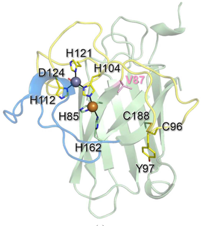

Cu/Zn superoxide dismutase family paralog from R. varieornatus with evidence of catalytic impairment. Bioinformatic analysis (file:RAMVA/RvY_13070/RvY_13070-bioinformatics/RESULTS.md) shows that while all four Cu-binding histidines are preserved at the residue level, the protein FAILS to match PROSITE PS00087 - the N-terminal H-x-H Cu coordination signature. PS00087 requires not just the catalytic histidines but also specific flanking residues that maintain the structural geometry of the Cu site loop. By analogy with the related paralog RvSOD15 (Sim & Inoue 2023, PMID:37358501), where restoring a missing histidine via V87H mutagenesis did NOT restore activity due to a flexible loop with non-canonical context, this paralog likely has impaired or absent canonical SOD activity despite retaining the catalytic residues. 292 aa with N-terminal extension; all 4 Cu His preserved by sequence but PROSITE PS00087 fails
| GO Term | Evidence | Action | Reason |
|---|---|---|---|
|
GO:0004784
superoxide dismutase activity
|
IEA
GO_REF:0000120 |
MARK AS OVER ANNOTATED |
Summary: All four Cu-binding histidines are preserved at the residue level, but PROSITE PS00087 (the N-terminal Cu coordination signature) FAILS to match. PS00087 requires both the H-x-H motif AND specific flanking residues that maintain the structural context. This indicates divergence at the Cu site beyond just the catalytic residues themselves. By analogy with Sim & Inoue (PMID:37358501), where the V87H rescue mutant of RvSOD15 failed to restore activity due to a flexible loop with non-canonical context, this paralog likely has impaired catalytic function. The IEA annotation from Pfam family assignment is therefore probably incorrect.
Reason: PROSITE PS00087 failure indicates the canonical N-terminal Cu coordination structure is not intact, even though the catalytic histidines themselves are present. Without biochemical confirmation, the IEA SOD activity annotation should be marked as over-annotated.
Supporting Evidence:
file:RAMVA/RvY_13070/RvY_13070-bioinformatics/RESULTS.md
RvY_00650 | A0A1D1UDY8 | bioinformatic verdict: PROBABLY IMPAIRED
|
|
GO:0005507
copper ion binding
|
IEA
GO_REF:0000002 |
ACCEPT |
Summary: All four canonical Cu-binding histidines are preserved at the sequence level. Copper binding is likely.
|
|
GO:0006801
superoxide metabolic process
|
IEA
GO_REF:0000002 |
MARK AS OVER ANNOTATED |
Summary: Inferred from SOD activity. Same caveats as the MF annotation.
|
|
GO:0019430
removal of superoxide radicals
|
IEA
GO_REF:0000108 |
MARK AS OVER ANNOTATED |
Summary: Inferred from SOD activity. Same caveats as the MF annotation.
|
|
GO:0046872
metal ion binding
|
IEA
GO_REF:0000002 |
KEEP AS NON CORE |
Summary: Parent term of the more specific Cu/Zn binding annotations. Both Cu and Zn binding are likely.
|
The research report should be a detailed narrative explaining the function, biological processes, and localization of the gene product. Citations should be given for all claims.
You should prioritize authoritative reviews and primary scientific literature when conducting research. You can supplement
this with annotations you find in gene/protein databases, but these can be outdated or inaccurate.
We are specifically interested in the primary function of the gene - for enzymes, what reaction is catalyzed, and what is the substrate specificity? For transporters, what is the substrate? For structural proteins or adapters, what is the broader structural role? For signaling molecules, what is the role in the pathway.
We are interested in where in or outside the cell the gene product carries out its function.
We are also interested in the signaling or biochemical pathways in which the gene functions. We are less interested in broad pleiotropic effects, except where these elucidate the precise role.
Include evidence where possible. We are interested in both experimental evidence as well as inference from structure, evolution, or bioinformatic analysis. Precise studies should be prioritized over high-throughput, where available.
Target identity (verified): The UniProt accession A0A1D1UDY8 is annotated as superoxide dismutase [Cu–Zn] (Cu/Zn SOD; EC 1.15.1.1) from the tardigrade Ramazzottius varieornatus (water bear), gene RvY_00650-1 / RvY_00650 (user-provided UniProt context). The Cu/Zn SOD family assignment is consistent with recent R. varieornatus literature on Cu/Zn SOD paralogs. However, the retrieved primary literature does not explicitly mention the specific gene ID RvY_00650-1/RvY_00650 or UniProt A0A1D1UDY8, so conclusions about this exact protein are primarily inferred from Cu/Zn SOD family/domain knowledge plus direct evidence from closely related R. varieornatus Cu/Zn SOD paralogs (notably RvSOD15) and a 2024 tardigrade antioxidant-defense review. (sim2023structureofa pages 3-4, sadowskabartosz2024antioxidantdefensein pages 23-24)
Superoxide dismutases (SODs) catalyze the dismutation (disproportionation) of the superoxide radical anion (O2•−) into hydrogen peroxide (H2O2) and molecular oxygen (O2); thus the core substrate is superoxide. (zheng2023theapplicationsand pages 1-2)
A quantitative framing from a recent high-citation review: spontaneous (non-enzymatic) disproportionation proceeds at about 2 × 10^5 M−1 s−1 at physiological pH, and enzymatic catalysis increases this rate by about 10,000-fold, reflecting an effectively diffusion-limited antioxidant enzyme. (zheng2023theapplicationsand pages 1-2)
Cu/Zn SODs are metalloenzymes whose activity depends on metal cofactors. In the canonical intracellular Cu/Zn SOD (SOD1), copper is the catalytic metal required for activity, while zinc primarily stabilizes structure and is not itself catalytic. (zheng2023theapplicationsand pages 2-4)
Cu/Zn SODs also feature a conserved electrostatic guidance region (“electrostatic loop”) enriched in positively charged residues that steer O2•− into the active-site channel, which helps explain the near diffusion-limited kinetics. (zheng2023theapplicationsand pages 1-2)
General isoform framework:
* SOD1 (Cu/Zn): the main intracellular Cu/Zn SOD; described as distributed in the cytoplasm, nucleus, and cell membrane, and existing as a ~32 kDa homodimer. (zheng2023theapplicationsand pages 2-4)
* SOD3 / ecSOD (Cu/Zn): secreted/extracellular Cu/Zn SOD; described as a ~135 kDa homotetramer distributed in extracellular fluids/tissues, with secretion/ECM association mediated by features such as a signal peptide and positively charged regions enabling binding to extracellular matrix/proteoglycans. (zheng2023theapplicationsand pages 4-5, zheng2023theapplicationsand pages 2-4)
Implication for A0A1D1UDY8/RvY_00650-1: without direct experimental localization data for this exact accession in the retrieved literature, the most defensible statement is that it encodes a Cu/Zn SOD-family enzyme likely operating in intracellular or extracellular redox defense, and any more specific localization (cytosolic vs secreted) requires sequence-based targeting prediction or direct proteomics/localization experiments.
A key 2023 primary study solved crystal structures of a tardigrade Cu/Zn SOD paralog named RvSOD15 from R. varieornatus strain YOKOZUNA-1 (GenBank GAV02514.1; PDB 7ypp wild type and 7ypr V87H mutant). (sim2023structureofa pages 1-2, sim2023structureofa pages 3-4)
Key findings relevant to functional annotation in R. varieornatus:
* Signal peptide / secretion: RvSOD15 is predicted to have an N-terminal signal peptide, suggesting a secreted Cu/Zn SOD in this species. (sim2023structureofa pages 2-3)
* Active-site divergence: one of the histidine ligands at the catalytic copper center is naturally replaced by Val87. (sim2023structureofa pages 1-2, sim2023structureofa pages 3-4)
* High-resolution structures: wild type solved at 2.20 Å and V87H mutant at 2.10 Å, with anomalous scattering confirming Cu and Zn at the metal sites. (sim2023structureofa pages 3-4)
* Metal-site geometry: the copper site in RvSOD15 is unusual (only three histidines in a T-shaped geometry, plus water ligands), with observed Cu–water interaction distances 2.6–3.4 Å (longer than typical CuZnSOD ranges). (sim2023structureofa pages 4-7)
* Functional interpretation: structural comparisons and modeling suggested that some R. varieornatus Cu/Zn SOD paralogs may have very low or lost canonical SOD activity, and might instead have residual scavenging (“better than nothing”) or unknown evolved functions. (sim2023structureofa pages 7-9, sim2023structureofa pages 9-10)
These observations are important because they show that, in R. varieornatus, not all Cu/Zn SOD-like proteins are necessarily canonical, high-activity SOD enzymes, which is a critical caveat for annotating any specific paralog (including RvY_00650-1) without direct biochemical testing. (sim2023structureofa pages 7-9, sadowskabartosz2024antioxidantdefensein pages 15-16)
Figure evidence (structure and Val87 substitution): the extracted figures show the RvSOD15 monomer, the copper/zinc sites, and a sequence alignment highlighting the Val87 position relative to conserved eukaryotic SODs. (sim2023structureofa media fb42da98, sim2023structureofa media 47b97881, sim2023structureofa media 045f3ce5)
A 2024 review focused on tardigrade antioxidant defense reports that R. varieornatus encodes a large repertoire of antioxidant genes, including 17 SOD genes (noting that typical metazoans have fewer), and contextualizes Cu/Zn SODs within broader dehydration/radiation stress tolerance. (sadowskabartosz2024antioxidantdefensein pages 15-16)
The review highlights that structural modeling of R. varieornatus SOD paralogs found unusual features (e.g., changes to the electrostatic loop or metal-binding residues) and supports the idea that gene-family expansion alone does not explain stress tolerance, because some duplicates may have reduced enzymatic function or novel roles. (sadowskabartosz2024antioxidantdefensein pages 15-16)
Most likely molecular function: Cu/Zn SOD family enzyme catalyzing superoxide dismutation (superoxide as primary substrate). This is the canonical function of Cu/Zn SODs and matches the UniProt description (user-provided) and general enzyme mechanism. (zheng2023theapplicationsand pages 1-2)
Caveat for R. varieornatus: direct R. varieornatus evidence shows that at least one Cu/Zn SOD paralog (RvSOD15) has an atypical copper site and is hypothesized to have reduced or lost canonical SOD activity. Therefore, for RvY_00650-1, without direct assay data, the most defensible annotation is “Cu/Zn SOD-like protein; likely antioxidant superoxide dismutase activity, but paralog-specific divergence in R. varieornatus makes activity uncertain.” (sim2023structureofa pages 7-9, sim2023structureofa pages 4-7, sadowskabartosz2024antioxidantdefensein pages 15-16)
The retrieved R. varieornatus structure work demonstrates that a tardigrade Cu/Zn SOD paralog can retain the canonical CuZnSOD fold and dimeric assembly while harboring meaningful active-site divergences that plausibly alter catalysis. (sim2023structureofa pages 3-4, sim2023structureofa pages 4-7)
For annotation purposes, this supports:
* CuZnSOD-like fold and likely requirement for Cu/Zn binding motifs typical of the family.
* Need to evaluate whether metal-binding residues and the electrostatic loop are conserved in the specific RvY_00650-1 sequence to assess the likelihood of high SOD activity.
General Cu/Zn SOD biology differentiates between intracellular SOD1 and secreted SOD3/ecSOD. (zheng2023theapplicationsand pages 2-4, zheng2023theapplicationsand pages 4-5)
Organism-specific evidence: the structurally characterized R. varieornatus paralog RvSOD15 is predicted to have an N-terminal signal peptide, supporting a secreted/extracellular localization for that paralog. (sim2023structureofa pages 2-3)
For A0A1D1UDY8/RvY_00650-1: no direct localization evidence for this exact protein was identified in the retrieved sources. Therefore, localization should be treated as unknown until supported by (i) presence/absence of a signal peptide or organelle targeting sequence in A0A1D1UDY8, or (ii) experimental proteomics/imaging evidence.
Recent synthesis of tardigrade stress biology places antioxidant enzymes (including SODs) in a broader oxidative-stress framework linked to cryptobiosis:
Preparation for oxidative stress (POS): antioxidant defenses can be induced during dehydration/anhydrobiosis to mitigate oxidative bursts during rehydration. This concept is discussed explicitly for tardigrades. (sadowskabartosz2024antioxidantdefensein pages 16-17, sadowskabartosz2024antioxidantdefensein pages 23-24)
ROS as signals for tun formation: ROS are not purely damaging; they can act as signaling molecules required for entry into cryptobiosis. For example, H2O2 at 0.75–5 mM can induce tun formation in Hypsibius exemplaris via cysteine thiol oxidation; blocking thiols or preventing H2O2-induced oxidation prevents tun formation. This supports a model where controlled oxidative signaling is part of the entry program. (sadowskabartosz2024antioxidantdefensein pages 12-13, sadowskabartosz2024antioxidantdefensein pages 13-15)
Gene-family expansion context: R. varieornatus is reported to have expanded antioxidant gene families (e.g., 17 SOD genes, plus expansions in other antioxidant systems), suggesting a diversified ROS-management repertoire; however, paralog divergence can include loss or modification of canonical enzyme activity. (sadowskabartosz2024antioxidantdefensein pages 15-16)
Interaction with broader redox network: The antioxidant system includes glutathione cycling enzymes, GSTs, peroxiredoxins/thioredoxins, catalases, and novel peroxidases; these likely work in concert to protect proteins and support DNA-repair competence after stress. (sadowskabartosz2024antioxidantdefensein pages 13-15, sadowskabartosz2024antioxidantdefensein pages 15-16)
Quantitative stress phenotypes linked to oxidative damage: the review reports examples such as >5-fold higher lipid peroxidation in desiccated Paramacrobiotus richtersi and ROS increases during rehydration proportional to desiccation duration, illustrating why superoxide/H2O2 detox pathways (including SOD→peroxidase/catalase) are expected to be important. (sadowskabartosz2024antioxidantdefensein pages 12-13, sadowskabartosz2024antioxidantdefensein pages 16-17)
While there is no direct evidence in the retrieved set for commercial/clinical deployment of tardigrade-derived Cu/Zn SODs, there are extensive real-world implementations of SODs and engineered SOD formulations.
From a 2023 applications review:
* Food/fermentation: a Lactobacillus plantarum strain produced SOD at 2476.21 ± 1.52 U g−1, and increased fermented yogurt SOD concentration to 19.827 ± 0.323 U mL−1. (zheng2023theapplicationsand pages 12-14)
* Dermatology/photoprotection delivery: topical TAT–SOD increased the minimum erythema dose by 36.6 ± 18.4% and reduced apoptotic sunburn cells by 47.6 ± 8.6%, illustrating one mode of SOD protein delivery and measured benefit in UVB-induced skin injury contexts. (zheng2023theapplicationsand pages 14-15)
* Stability/half-life engineering: PEGylation approaches can retain 90–100% of native SOD activity while improving pharmacokinetics/stability (reported for very high MW PEG 41,000–72,000 Da in cited work). (zheng2023theapplicationsand pages 14-15)
Relevance to tardigrade SOD annotation: tardigrade biology emphasizes ROS management during desiccation/rehydration; structural divergence among R. varieornatus SOD paralogs suggests a potential reservoir for engineering antioxidant proteins with altered stability/function, but this remains speculative without direct characterization of A0A1D1UDY8. (sadowskabartosz2024antioxidantdefensein pages 15-16, sim2023structureofa pages 9-10)
The 2023 structural paper argues that some R. varieornatus Cu/Zn SOD paralogs have unusual metal-binding residues or structural deletions, and proposes that some may have very low or absent canonical SOD activity and might have other roles yet to be discovered. (sim2023structureofa pages 7-9, sim2023structureofa pages 9-10)
The 2024 review echoes this view: R. varieornatus contains numerous SOD genes (17 reported), but structural deviations such as in RvSOD15 support the interpretation that duplication alone is not a sufficient explanation for extreme stress tolerance. (sadowskabartosz2024antioxidantdefensein pages 15-16)
The 2024 review emphasizes that ROS can function as signaling molecules for tun formation and that excessive antioxidant pretreatment can reduce survival in some stress paradigms, consistent with the concept that controlled oxidation is part of the cryptobiosis program (“preparation for oxidative stress” and cysteine oxidation signaling). (sadowskabartosz2024antioxidantdefensein pages 13-15, sadowskabartosz2024antioxidantdefensein pages 12-13)
| Topic | Summary | Evidence type | Key sources |
|---|---|---|---|
| Functional annotation summary for RvY_00650-1 (A0A1D1UDY8): Gene/protein identifiers and organism | Target protein is UniProt A0A1D1UDY8, annotated as superoxide dismutase [Cu-Zn] (EC 1.15.1.1), gene RvY_00650-1 / RvY_00650, from Ramazzottius varieornatus (tardigrade). In the retrieved literature, this exact accession/gene ID was not directly discussed; published structural work instead focused on other R. varieornatus Cu/Zn SODs such as RvSOD15 (GenBank GAV02514.1) and additional RvSOD family members. | Direct for A0A1D1UDY8 (identifier from user/UniProt context) + Direct for R. varieornatus SOD | (sim2023structureofa pages 2-3, sim2023structureofa pages 3-4, sadowskabartosz2024antioxidantdefensein pages 23-24) |
| Protein family/domains | UniProt/domain context places A0A1D1UDY8 in the Cu/Zn superoxide dismutase family with SOD-like_Cu/Zn_dom_sf, SOD_Cu/Zn_/chaperone, SOD_Cu/Zn_BS, SOD_Cu_Zn_dom, PF00080. This matches the broader CuZnSOD fold described for tardigrade RvSOD15, which adopts a canonical CuZnSOD monomer architecture despite unusual active-site features. | Direct for A0A1D1UDY8 (family/domain assignment) + Direct for R. varieornatus SOD | (sim2023structureofa pages 3-4, sim2023structureofa pages 1-2) |
| Enzymatic reaction and substrate | Canonical Cu/Zn SODs catalyze dismutation of superoxide radical: 2 O2•− + 2 H+ -> H2O2 + O2. Substrate specificity is principally superoxide anion (O2•−). The spontaneous nonenzymatic rate is about 2 × 10^5 M−1 s−1 at physiological pH, and SOD catalysis accelerates this by about 10,000-fold. For A0A1D1UDY8, this function is inferred from family membership, not directly demonstrated in the retrieved Ramazzottius paper set. | General CuZnSOD; inferred for A0A1D1UDY8 | (zheng2023theapplicationsand pages 2-4, zheng2023theapplicationsand pages 1-2) |
| Cofactors and active-site residues | Canonical CuZnSOD requires catalytic Cu for redox chemistry and Zn mainly for structural stabilization; Cu generally cannot be replaced, whereas Zn can sometimes be substituted experimentally. Superoxide is guided into the active site by a conserved electrostatic loop with positively charged residues. In R. varieornatus, several Cu/Zn SOD paralogs show unusual substitutions/deletions: e.g., RvSOD15 carries Val87 in place of a canonical Cu-ligating histidine, and some RvSODs show deletion of the electrostatic loop or β3 sheet and atypical metal-binding residues, suggesting reduced or lost canonical SOD activity in some paralogs. | Direct for R. varieornatus SOD + General CuZnSOD | (sim2023structureofa pages 7-9, sim2023structureofa pages 4-7, sadowskabartosz2024antioxidantdefensein pages 15-16, zheng2023theapplicationsand pages 4-5, zheng2023theapplicationsand pages 1-2) |
| Oligomeric state | Typical intracellular SOD1/CuZnSOD is a ~32 kDa homodimer. Extracellular SOD3 is typically a ~135 kDa homotetramer. Structurally characterized tardigrade RvSOD15 forms the canonical CuZnSOD monomer fold and assembled as typical dimers in the crystal. | Direct for R. varieornatus SOD + General CuZnSOD | (sim2023structureofa pages 3-4, zheng2023theapplicationsand pages 2-4) |
| Subcellular localization | In general, SOD1 is mainly intracellular and distributed in the cytoplasm, nucleus, and cell membrane, whereas SOD3/ecSOD is secreted/extracellular, carrying a signal peptide and ECM/proteoglycan-binding features. For tardigrades, RvSOD15 is specifically reported to have an N-terminal signal peptide, supporting a secreted/extracellular localization. For A0A1D1UDY8/RvY_00650-1, no direct localization evidence was found in the retrieved literature; localization remains an inference from family/domain annotation unless sequence-level targeting features are independently verified. | Direct for R. varieornatus SOD + General CuZnSOD | (sim2023structureofa pages 2-3, sim2023structureofa pages 3-4, zheng2023theapplicationsand pages 4-5, zheng2023theapplicationsand pages 2-4) |
| Evidence availability for the specific target | Literature is limited for the specific protein A0A1D1UDY8 / RvY_00650-1. The retrieved papers do not mention RvY_00650 or UniProt A0A1D1UDY8 directly. There is, however, direct literature on other R. varieornatus Cu/Zn SODs, especially RvSOD15, plus review-level evidence that R. varieornatus has an expanded SOD repertoire (reported as 17 SOD genes). Therefore, functional annotation of A0A1D1UDY8 must rely heavily on family/domain inference plus organism-level paralog evidence, while carefully avoiding overclaiming direct experimental support for this exact protein. | Direct for R. varieornatus SOD; limited direct evidence for A0A1D1UDY8 | (sim2023structureofa pages 3-4, sadowskabartosz2024antioxidantdefensein pages 15-16, sim2023structureofa pages 9-10, sadowskabartosz2024antioxidantdefensein pages 23-24) |
| Key quantitative data points | For tardigrade RvSOD15, crystal structures were solved at 2.20 Å (wild type) and 2.10 Å (V87H mutant), with Rwork/Rfree ~19.3/23.2 and ~17.2/21.4, respectively; AlphaFold/model comparisons included pLDDT ~86.99 for RvSOD15, 77.15 for RvSOD12, 92.19 for RvSOD16 v1; Cu-associated water distances were 2.6–3.4 Å; by analogy to a related mutant, activity may be around 10^-4 of canonical CuZnSODs for RvSOD15-like active-site geometry. General CuZnSOD kinetics/applications reported: spontaneous superoxide disproportionation ~2 × 10^5 M−1 s−1, enzyme acceleration ~10,000-fold; food/biotech examples include 2476.21 ± 1.52 U g−1 SOD production by Lactobacillus plantarum, 19.827 ± 0.323 U mL−1 SOD in yogurt, and topical TAT-SOD causing 36.6 ± 18.4% increase in minimum erythema dose and 47.6 ± 8.6% reduction in sunburn cells. | Direct for R. varieornatus SOD + General CuZnSOD | (sim2023structureofa pages 7-9, sim2023structureofa pages 4-7, sim2023structureofa pages 3-4, zheng2023theapplicationsand pages 1-2, zheng2023theapplicationsand pages 12-14, zheng2023theapplicationsand pages 14-15) |
Table: This table summarizes what can be stated directly versus inferred for Ramazzottius varieornatus gene RvY_00650-1 (UniProt A0A1D1UDY8), integrating direct tardigrade SOD evidence with general Cu/Zn SOD biology. It is useful for distinguishing target-specific support from paralog- and family-based annotation.
RvY_00650-1 (UniProt A0A1D1UDY8) should be annotated as a Cu/Zn superoxide dismutase-family protein (EC 1.15.1.1) that most likely participates in ROS management via superoxide dismutation in R. varieornatus, with biological relevance to oxidative stress during dehydration/anhydrobiosis and rehydration. However, given direct evidence that some R. varieornatus Cu/Zn SOD paralogs show unusual active-site substitutions and may have reduced/lost canonical activity, the confidence in enzymatic activity for this specific paralog remains provisional until sequence conservation and/or direct assays confirm canonical Cu/Zn SOD catalysis. (zheng2023theapplicationsand pages 1-2, sadowskabartosz2024antioxidantdefensein pages 15-16, sim2023structureofa pages 7-9)
References
(sim2023structureofa pages 3-4): Kee-Shin Sim and Tsuyoshi Inoue. Structure of a superoxide dismutase from a tardigrade: ramazzottius varieornatus strain yokozuna-1. Acta crystallographica. Section F, Structural biology communications, 79:169-179, Jun 2023. URL: https://doi.org/10.1107/s2053230x2300523x, doi:10.1107/s2053230x2300523x. This article has 5 citations.
(sadowskabartosz2024antioxidantdefensein pages 23-24): Izabela Sadowska-Bartosz and Grzegorz Bartosz. Antioxidant defense in the toughest animals on the earth: its contribution to the extreme resistance of tardigrades. International Journal of Molecular Sciences, 25:8393, Aug 2024. URL: https://doi.org/10.3390/ijms25158393, doi:10.3390/ijms25158393. This article has 14 citations.
(zheng2023theapplicationsand pages 1-2): Mengli Zheng, Yating Liu, Guanfeng Zhang, Zhikang Yang, Weiwei Xu, and Qinghua Chen. The applications and mechanisms of superoxide dismutase in medicine, food, and cosmetics. Antioxidants, 12:1675, Aug 2023. URL: https://doi.org/10.3390/antiox12091675, doi:10.3390/antiox12091675. This article has 373 citations.
(zheng2023theapplicationsand pages 2-4): Mengli Zheng, Yating Liu, Guanfeng Zhang, Zhikang Yang, Weiwei Xu, and Qinghua Chen. The applications and mechanisms of superoxide dismutase in medicine, food, and cosmetics. Antioxidants, 12:1675, Aug 2023. URL: https://doi.org/10.3390/antiox12091675, doi:10.3390/antiox12091675. This article has 373 citations.
(zheng2023theapplicationsand pages 4-5): Mengli Zheng, Yating Liu, Guanfeng Zhang, Zhikang Yang, Weiwei Xu, and Qinghua Chen. The applications and mechanisms of superoxide dismutase in medicine, food, and cosmetics. Antioxidants, 12:1675, Aug 2023. URL: https://doi.org/10.3390/antiox12091675, doi:10.3390/antiox12091675. This article has 373 citations.
(sim2023structureofa pages 1-2): Kee-Shin Sim and Tsuyoshi Inoue. Structure of a superoxide dismutase from a tardigrade: ramazzottius varieornatus strain yokozuna-1. Acta crystallographica. Section F, Structural biology communications, 79:169-179, Jun 2023. URL: https://doi.org/10.1107/s2053230x2300523x, doi:10.1107/s2053230x2300523x. This article has 5 citations.
(sim2023structureofa pages 2-3): Kee-Shin Sim and Tsuyoshi Inoue. Structure of a superoxide dismutase from a tardigrade: ramazzottius varieornatus strain yokozuna-1. Acta crystallographica. Section F, Structural biology communications, 79:169-179, Jun 2023. URL: https://doi.org/10.1107/s2053230x2300523x, doi:10.1107/s2053230x2300523x. This article has 5 citations.
(sim2023structureofa pages 4-7): Kee-Shin Sim and Tsuyoshi Inoue. Structure of a superoxide dismutase from a tardigrade: ramazzottius varieornatus strain yokozuna-1. Acta crystallographica. Section F, Structural biology communications, 79:169-179, Jun 2023. URL: https://doi.org/10.1107/s2053230x2300523x, doi:10.1107/s2053230x2300523x. This article has 5 citations.
(sim2023structureofa pages 7-9): Kee-Shin Sim and Tsuyoshi Inoue. Structure of a superoxide dismutase from a tardigrade: ramazzottius varieornatus strain yokozuna-1. Acta crystallographica. Section F, Structural biology communications, 79:169-179, Jun 2023. URL: https://doi.org/10.1107/s2053230x2300523x, doi:10.1107/s2053230x2300523x. This article has 5 citations.
(sim2023structureofa pages 9-10): Kee-Shin Sim and Tsuyoshi Inoue. Structure of a superoxide dismutase from a tardigrade: ramazzottius varieornatus strain yokozuna-1. Acta crystallographica. Section F, Structural biology communications, 79:169-179, Jun 2023. URL: https://doi.org/10.1107/s2053230x2300523x, doi:10.1107/s2053230x2300523x. This article has 5 citations.
(sadowskabartosz2024antioxidantdefensein pages 15-16): Izabela Sadowska-Bartosz and Grzegorz Bartosz. Antioxidant defense in the toughest animals on the earth: its contribution to the extreme resistance of tardigrades. International Journal of Molecular Sciences, 25:8393, Aug 2024. URL: https://doi.org/10.3390/ijms25158393, doi:10.3390/ijms25158393. This article has 14 citations.
(sim2023structureofa media fb42da98): Kee-Shin Sim and Tsuyoshi Inoue. Structure of a superoxide dismutase from a tardigrade: ramazzottius varieornatus strain yokozuna-1. Acta crystallographica. Section F, Structural biology communications, 79:169-179, Jun 2023. URL: https://doi.org/10.1107/s2053230x2300523x, doi:10.1107/s2053230x2300523x. This article has 5 citations.
(sim2023structureofa media 47b97881): Kee-Shin Sim and Tsuyoshi Inoue. Structure of a superoxide dismutase from a tardigrade: ramazzottius varieornatus strain yokozuna-1. Acta crystallographica. Section F, Structural biology communications, 79:169-179, Jun 2023. URL: https://doi.org/10.1107/s2053230x2300523x, doi:10.1107/s2053230x2300523x. This article has 5 citations.
(sim2023structureofa media 045f3ce5): Kee-Shin Sim and Tsuyoshi Inoue. Structure of a superoxide dismutase from a tardigrade: ramazzottius varieornatus strain yokozuna-1. Acta crystallographica. Section F, Structural biology communications, 79:169-179, Jun 2023. URL: https://doi.org/10.1107/s2053230x2300523x, doi:10.1107/s2053230x2300523x. This article has 5 citations.
(sadowskabartosz2024antioxidantdefensein pages 16-17): Izabela Sadowska-Bartosz and Grzegorz Bartosz. Antioxidant defense in the toughest animals on the earth: its contribution to the extreme resistance of tardigrades. International Journal of Molecular Sciences, 25:8393, Aug 2024. URL: https://doi.org/10.3390/ijms25158393, doi:10.3390/ijms25158393. This article has 14 citations.
(sadowskabartosz2024antioxidantdefensein pages 12-13): Izabela Sadowska-Bartosz and Grzegorz Bartosz. Antioxidant defense in the toughest animals on the earth: its contribution to the extreme resistance of tardigrades. International Journal of Molecular Sciences, 25:8393, Aug 2024. URL: https://doi.org/10.3390/ijms25158393, doi:10.3390/ijms25158393. This article has 14 citations.
(sadowskabartosz2024antioxidantdefensein pages 13-15): Izabela Sadowska-Bartosz and Grzegorz Bartosz. Antioxidant defense in the toughest animals on the earth: its contribution to the extreme resistance of tardigrades. International Journal of Molecular Sciences, 25:8393, Aug 2024. URL: https://doi.org/10.3390/ijms25158393, doi:10.3390/ijms25158393. This article has 14 citations.
(zheng2023theapplicationsand pages 12-14): Mengli Zheng, Yating Liu, Guanfeng Zhang, Zhikang Yang, Weiwei Xu, and Qinghua Chen. The applications and mechanisms of superoxide dismutase in medicine, food, and cosmetics. Antioxidants, 12:1675, Aug 2023. URL: https://doi.org/10.3390/antiox12091675, doi:10.3390/antiox12091675. This article has 373 citations.
(zheng2023theapplicationsand pages 14-15): Mengli Zheng, Yating Liu, Guanfeng Zhang, Zhikang Yang, Weiwei Xu, and Qinghua Chen. The applications and mechanisms of superoxide dismutase in medicine, food, and cosmetics. Antioxidants, 12:1675, Aug 2023. URL: https://doi.org/10.3390/antiox12091675, doi:10.3390/antiox12091675. This article has 373 citations.

id: A0A1D1UDY8
gene_symbol: RvY_00650
product_type: PROTEIN
status: IN_PROGRESS
taxon:
id: NCBITaxon:947166
label: Ramazzottius varieornatus
description: >-
Cu/Zn superoxide dismutase family paralog from R. varieornatus with evidence of catalytic impairment. Bioinformatic analysis (file:RAMVA/RvY_13070/RvY_13070-bioinformatics/RESULTS.md) shows that while all four Cu-binding histidines are preserved at the residue level, the protein FAILS to match PROSITE PS00087 - the N-terminal H-x-H Cu coordination signature. PS00087 requires not just the catalytic histidines but also specific flanking residues that maintain the structural geometry of the Cu site loop. By analogy with the related paralog RvSOD15 (Sim & Inoue 2023, PMID:37358501), where restoring a missing histidine via V87H mutagenesis did NOT restore activity due to a flexible loop with non-canonical context, this paralog likely has impaired or absent canonical SOD activity despite retaining the catalytic residues. 292 aa with N-terminal extension; all 4 Cu His preserved by sequence but PROSITE PS00087 fails
existing_annotations:
- term:
id: GO:0004784
label: superoxide dismutase activity
evidence_type: IEA
original_reference_id: GO_REF:0000120
review:
summary: >-
All four Cu-binding histidines are preserved at the residue level, but PROSITE PS00087 (the N-terminal Cu coordination signature) FAILS to match. PS00087 requires both the H-x-H motif AND specific flanking residues that maintain the structural context. This indicates divergence at the Cu site beyond just the catalytic residues themselves. By analogy with Sim & Inoue (PMID:37358501), where the V87H rescue mutant of RvSOD15 failed to restore activity due to a flexible loop with non-canonical context, this paralog likely has impaired catalytic function. The IEA annotation from Pfam family assignment is therefore probably incorrect.
action: MARK_AS_OVER_ANNOTATED
reason: >-
PROSITE PS00087 failure indicates the canonical N-terminal Cu coordination structure is not intact, even though the catalytic histidines themselves are present. Without biochemical confirmation, the IEA SOD activity annotation should be marked as over-annotated.
supported_by:
- reference_id: file:RAMVA/RvY_13070/RvY_13070-bioinformatics/RESULTS.md
supporting_text: >-
RvY_00650 | A0A1D1UDY8 | bioinformatic verdict: PROBABLY IMPAIRED
- term:
id: GO:0005507
label: copper ion binding
evidence_type: IEA
original_reference_id: GO_REF:0000002
review:
summary: >-
All four canonical Cu-binding histidines are preserved at the sequence level. Copper binding is likely.
action: ACCEPT
- term:
id: GO:0006801
label: superoxide metabolic process
evidence_type: IEA
original_reference_id: GO_REF:0000002
review:
summary: >-
Inferred from SOD activity. Same caveats as the MF annotation.
action: MARK_AS_OVER_ANNOTATED
- term:
id: GO:0019430
label: removal of superoxide radicals
evidence_type: IEA
original_reference_id: GO_REF:0000108
review:
summary: >-
Inferred from SOD activity. Same caveats as the MF annotation.
action: MARK_AS_OVER_ANNOTATED
- term:
id: GO:0046872
label: metal ion binding
evidence_type: IEA
original_reference_id: GO_REF:0000002
review:
summary: >-
Parent term of the more specific Cu/Zn binding annotations. Both Cu and Zn binding are likely.
action: KEEP_AS_NON_CORE
references:
- id: GO_REF:0000002
title: Gene Ontology annotation through association of InterPro records with GO
terms
findings: []
- id: GO_REF:0000108
title: Automatic assignment of GO terms using logical inference, based on on inter-ontology
links
findings: []
- id: GO_REF:0000120
title: Combined Automated Annotation using Multiple IEA Methods
findings: []
- id: file:RAMVA/RvY_13070/RvY_13070-bioinformatics/RESULTS.md
title: Bioinformatics analysis of Cu/Zn SOD paralogs in R. varieornatus
findings:
- statement: "Bioinformatic verdict for RvY_00650: PROBABLY IMPAIRED. 292 aa with N-terminal extension; all 4 Cu His preserved by sequence but PROSITE PS00087 fails"
- id: PMID:37358501
title: >-
Structure of a superoxide dismutase from a tardigrade: Ramazzottius varieornatus
strain YOKOZUNA-1.
findings:
- statement: Crystal structures of RvSOD15 (PDB 7ypp WT 2.20 A; 7ypr V87H mutant
2.10 A) show an unusual T-shaped Cu coordination site with only three histidines
(Val87 replaces a canonical His ligand) and Cu-water distances 2.6-3.4 A;
V87H rescue does not restore canonical activity, supporting paralog-specific
catalytic divergence in R. varieornatus Cu/Zn SODs.
- id: PMID:39125965
title: >-
Antioxidant Defense in the Toughest Animals on the Earth: Its Contribution
to the Extreme Resistance of Tardigrades.
findings:
- statement: This 2024 review summarizes the expanded R. varieornatus SOD repertoire
and highlights that some tardigrade Cu/Zn SOD paralogs are atypical and may
have reduced or lost canonical SOD activity, supporting cautious annotation
of RvY_00650 without direct biochemical evidence.
- id: file:RAMVA/RvY_00650/RvY_00650-deep-research-falcon.md
title: Deep research report on RvY_00650/A0A1D1UDY8 (Falcon/Edison Scientific Literature)
findings:
- statement: A0A1D1UDY8 is annotated as a Cu/Zn SOD-family protein from R. varieornatus;
no primary publication directly characterizes this specific accession, so
functional inference relies on the Cu/Zn SOD family canonical mechanism plus
direct evidence from the closely related paralog RvSOD15 (Sim 2023) and the
2024 tardigrade antioxidant defense review (Sadowska-Bartosz 2024).
- statement: Combined with the existing bioinformatic verdict (PROSITE PS00087
fails despite preserved Cu histidines), the most defensible annotation is
"Cu/Zn SOD-like protein; likely antioxidant superoxide dismutase activity,
but paralog-specific divergence makes activity uncertain" - downstream
annotations should be cautious and biochemical assay would be needed for
definitive functional assignment.
{kind=link}